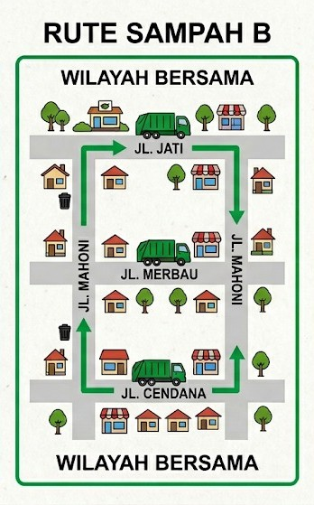

TrashFlow
TrashFlow adalah solusi digital untuk manajemen pengangkutan
sampah di lingkungan perumahan. Dengan sistem rute terjadwal
dan fitur pelaporan, TrashFlow membantu menciptakan
lingkungan yang lebih bersih, tertata, dan responsif.
- Rute A

- Rute B

- Rute C